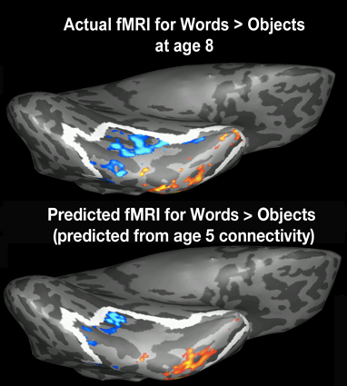

We test whether core components of brain circuitry are present early (i.e. in neonates) and predict neural responses and behavioral outcomes in the same child later in life. Current work in our lab explores the differentiation of neural connectivity patterns and early markers of neural activation in neonates (scanned while the child is asleep). We then follow-up with these children with neuroimaging and behavioral assessments as they get older to test if (and how) early brain architecture can predict neural activity and behavior when they are older.
We are now also expanding this study into looking at fetal brain circuitry, and the brain circuitry of the pregnant parent. This extension to the neonatal longitudinal study will allow us to explore the original goals of the study, while also looking at the similarities and differences between fetal brains and the maternal brain.
"The intrinsic neonatal hippocampal network: rsfMRI findings." (Howell et al., 2020) Journal of Neurophysiology.
"Innate connectivity patterns drive the development of the visual word form area" (Li et al., 2020) Scientific Reports.
"Adults vs. neonates: Differentiation of functional connectivity between the basolateral amygdala and occipitotemporal cortex." (Hansen et al., 2020) PlosOne.
Preschool longitudinal study
We also study preschool children before and as they start to attend school and acquire new skills, e.g. reading, mathematics. We study how brain areas become selective for specific types of mental function and how that predicts the acquisition of new skills (e.g. reading, mathematics) and the maturation of skills (e.g. emotional regulation, executive function). We have so far found that brain connectivity at age 5, before a child learns to read, predicts the precise location of where the “visual word form area” will arise in that same child when s/he can read, at age 7, and that it may also predict dyslexia even before the child can read.
"Connectivity precedes function in the development of the visual word form area." (Saygin et al., 2016) Nature Neuroscience.
"Structural Connectivity of the Developing Human Amygdala." (Saygin et al., 2015) PlosOne.
"Tracking the Roots of Reading Ability: White Matter Volume and Integrity Correlate with Phonological Awareness in Prereading and Early-Reading Kindergarten Children." (Saygin et al., 2013) Journal of Neuroscience.
Plasticity and clinical outcome studies

We investigate neural markers for early diagnosis of clinical and developmental disorders, and how atypical or adverse experience can change the connectional and functional architecture of the brain. Our previous work explored pre-reading white matter measures as a potential predictor of future reading fluency and dyslexia. These MRI-based biomarkers may be used to develop interventions even before a child learns to read. We are currently exploring these biomarkers and identifying the static and dynamic changes that occur with learning to read in typical children, and with interventions in children with dyslexia. We are also nvestigating plasticity due to early brain injury, and using our knowledge of the typical developmental trajectory of neural networks and specialization to inform and predict recovery due to injury, either in the case of contact sports or due to surgical intervention.
"Tracking the Roots of Reading Ability: White Matter Volume and Integrity Correlate with Phonological Awareness in Prereading and Early-Reading Kindergarten Children." (Saygin et al., 2013) Journal of Neuroscience.
"Predicting Treatment Response in Social Anxiety Disorder From Functional Magnetic Resonance Imaging." (Doehrmann et al., 2012) Archives of General Psychiatry.
"Brain connectomics predict response to treatment in social anxiety disorder." (Whitfield-Gabrieli et al., 2015) Molecular Psychiatry.